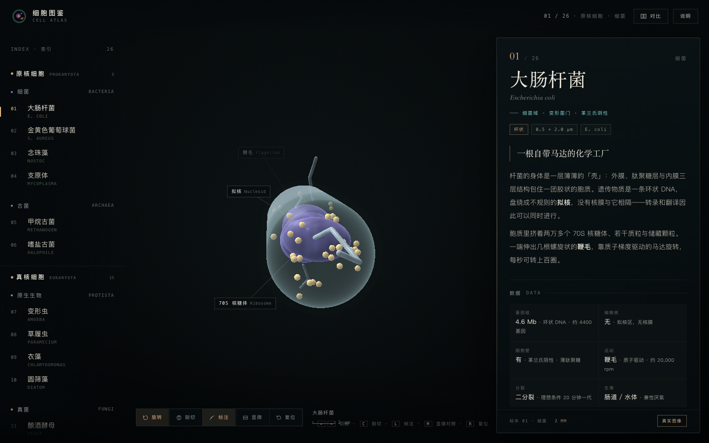
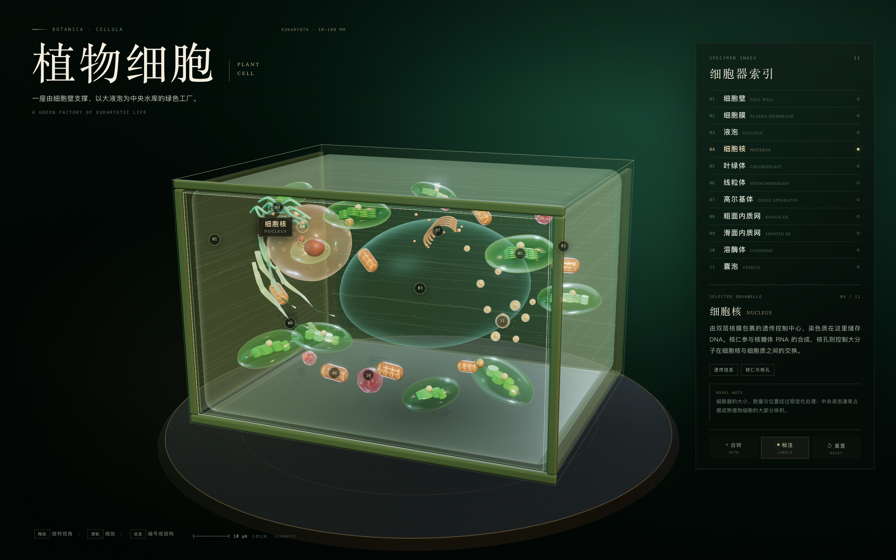
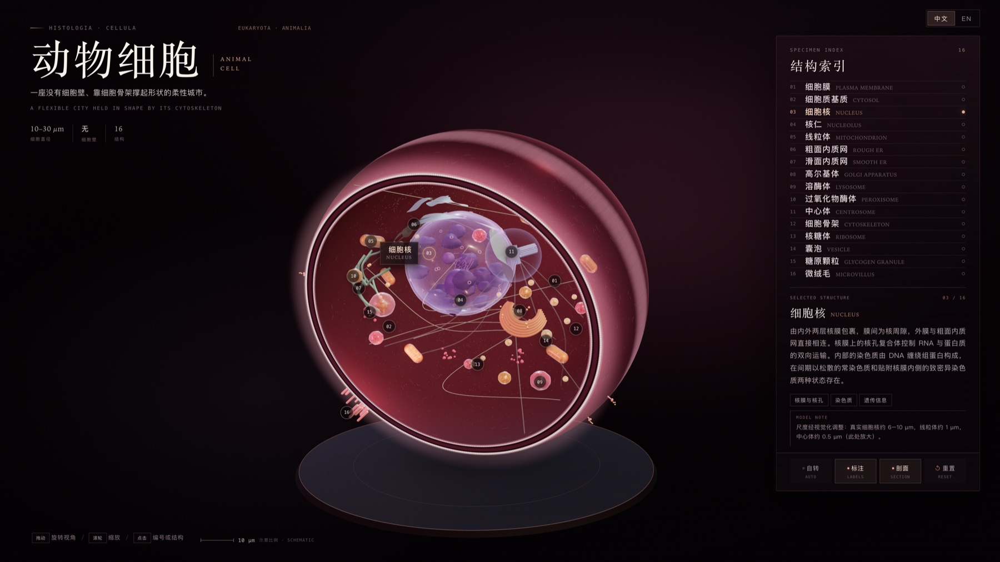
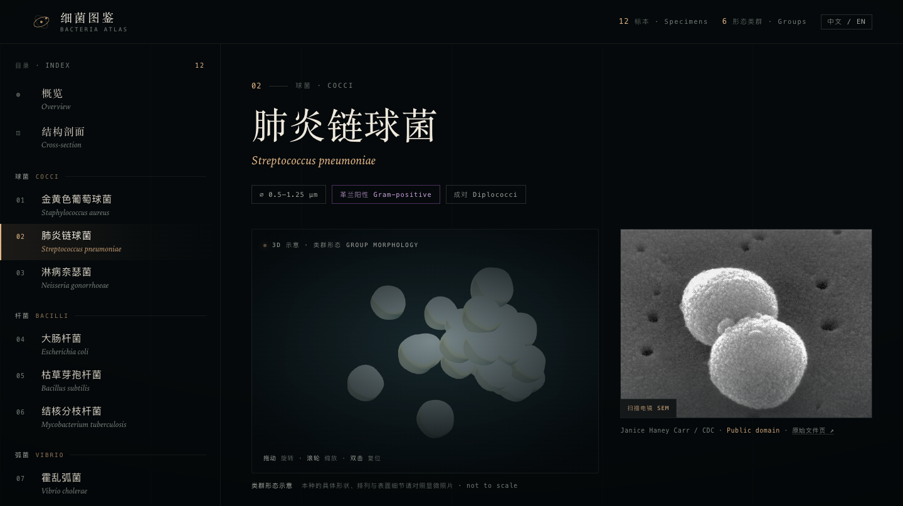
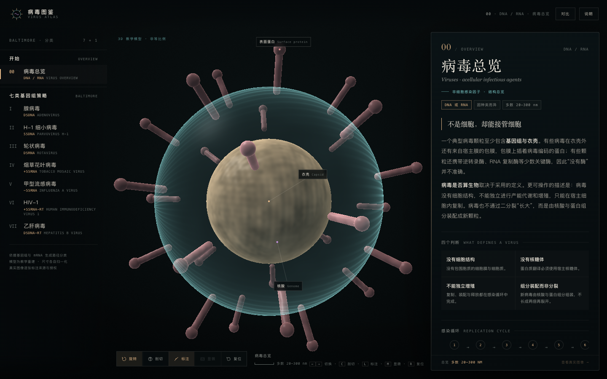
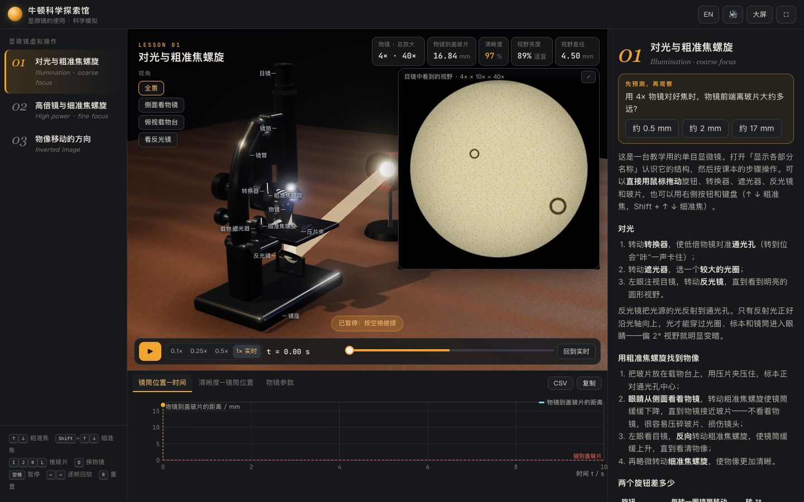

EXPLORE / 05细胞形态图鉴
Cell Atlas观察 26 个标本的三维示意结构，并与显微图像并排比较。演示正文目前为中文。
3D 旋转 · 剖切 · 显微对照演示素材核对后开放从植物与动物细胞，到细菌和病毒，对照三维结构、形态与显微图像。
从植物细胞、动物细胞和微生物中选择一个主题，旋转模型并查看结构说明；有显微图像的页面会同时提供来源信息。

EXPLORE / 01旋转植物细胞，点选 11 种细胞器查看结构与功能。细胞器大小和位置经过视觉化处理。
11 种细胞器 · WebGL 2 · 3D 交互打开演示
EXPLORE / 02旋转并剖切动物细胞，点选 16 种结构查看中英文说明；模型尺寸经过视觉化处理。
16 种结构 · Three.js · 中英切换打开演示
EXPLORE / 03探索 12 种细菌与六类形态，旋转程序生成的群体模型，并查看逐张署名的显微图像。
12 个标本 · 6 类群 · 3D · 显微图像打开演示
EXPLORE / 04探索七类代表病毒的结构、基因组与复制策略，并对照真实电子显微镜图像。
7 种病毒 · 3D 模型 · 电镜对照 · 来源署名打开演示
EXPLORE / 05观察 26 个标本的三维示意结构，并与显微图像并排比较。演示正文目前为中文。
3D 旋转 · 剖切 · 显微对照演示素材核对后开放
EXPLORE / 06练习显微镜对光、调焦、转换高倍镜与判断物像移动方向，熟悉观察细胞和微生物的基本步骤。
3D 显微镜 · 对光与调焦 · 中英文切换打开演示